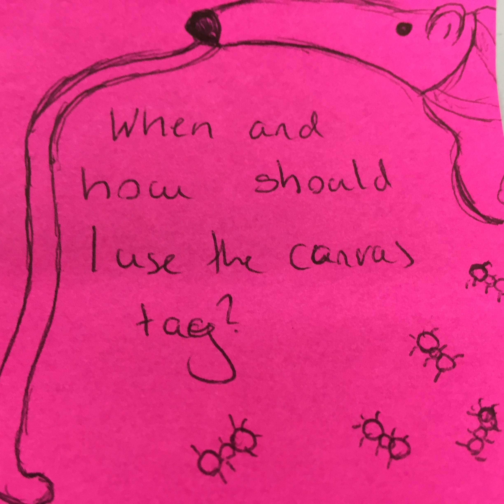
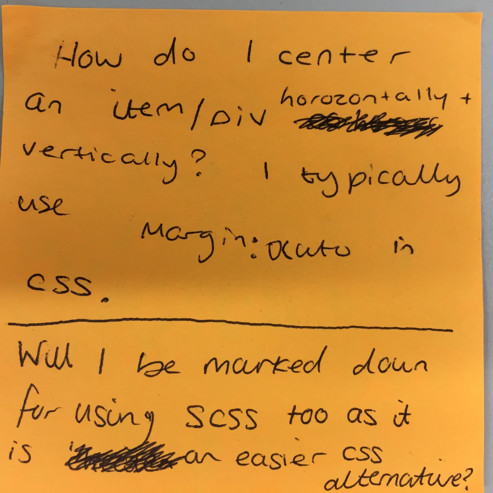
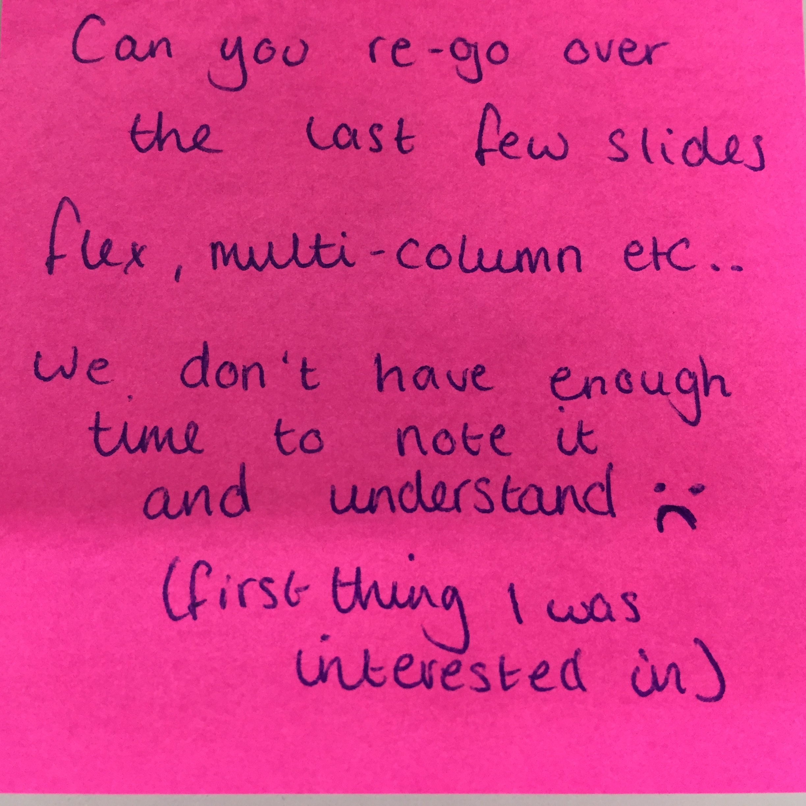
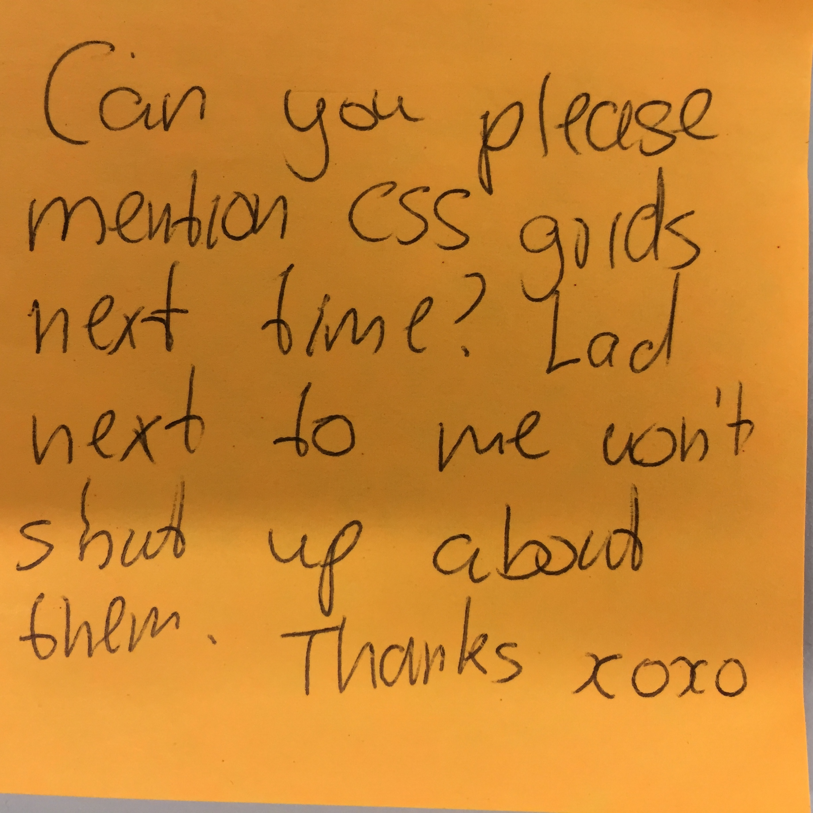
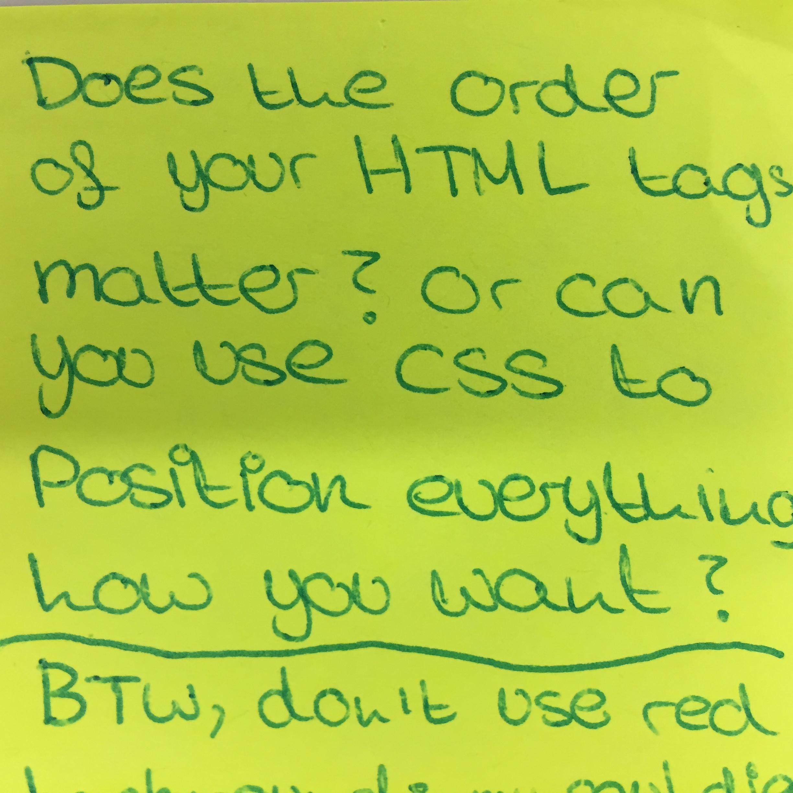
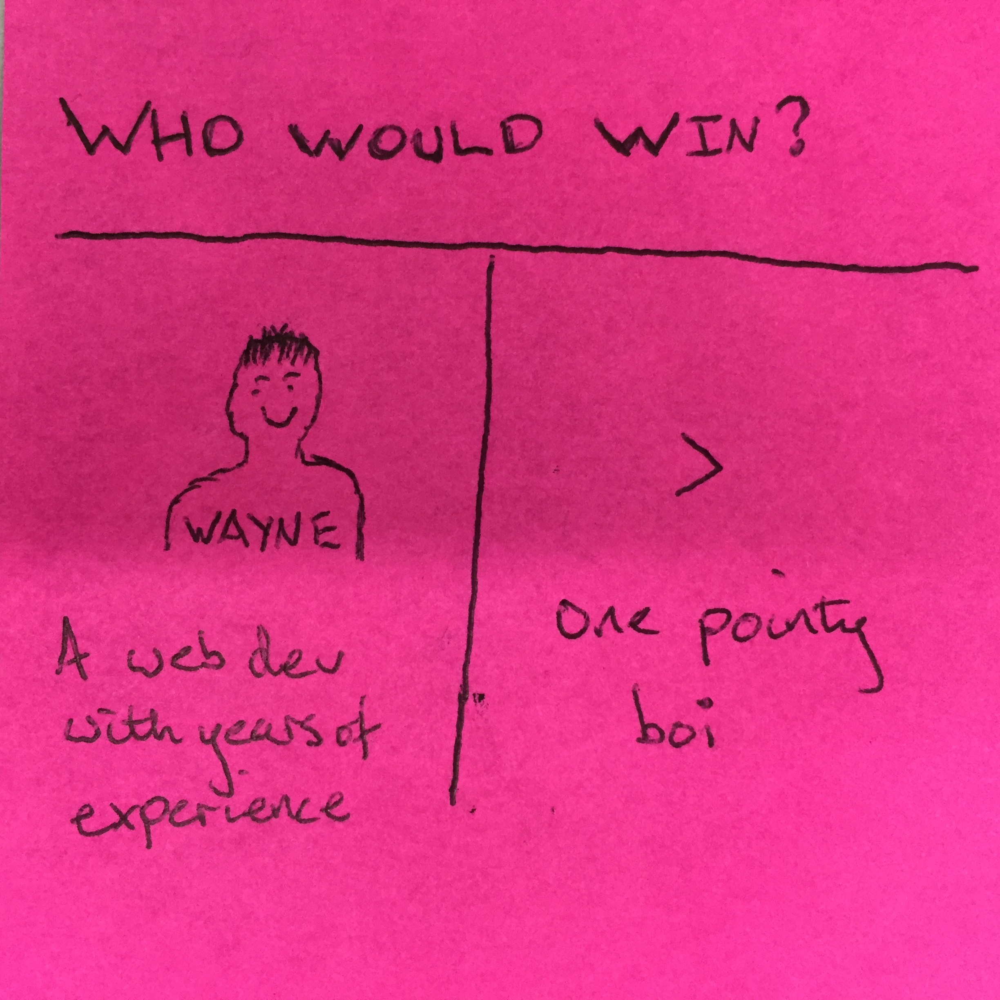
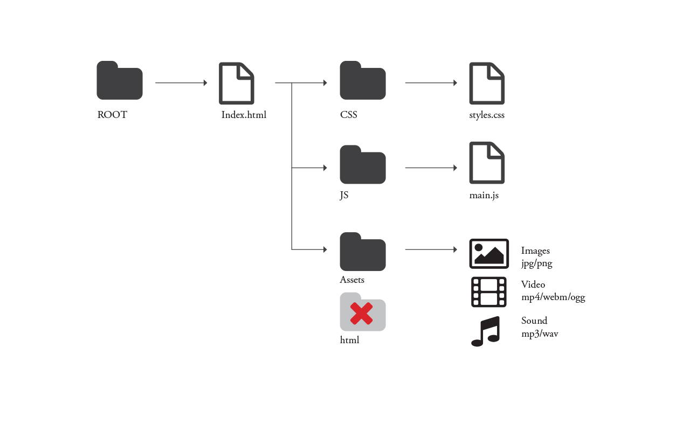

Hello
(Web Authoring CMP1130M)
Wayne Christian
Designer, Developer, Director & Senior Lecturer
Stickies!






First Web Auth Social (Some awards, showcases etc)
Home Night Club Thursday 14th December(Week 12)
6.30 - 9.00
Student Deals!
http://poll.fm/5vajx
Recap
Recap
Last week we looked at
Measurements pixels vs ems vs rems
CSS2 Styles (position, display)
CSS3 styles (box model, flex)
Pseudo classes
Prefixes
Mobile up vs desktop down
Fixed vs Fluid vs Adaptive vs Responsive Layout
Repsonsive stye sheet, media queries
Workshop Observations
Observations
Being too specific with media query
Not using developer tools to check
Centreing content
Parent > child relationships (css)
Keep retyping the same css styles (reset.css)
Being too specific with media query
body{
}
@media only screen and (min-device-width: 320px) and (max-device-width: 480px) {
body{
}
}
@media only screen and (min-device-width: 481px) and (max-device-width: 680px) {
body{
}
}
let the styles cascade up with break points for mobile, tablet and desktop. You will not get the "nomans land" where no conditions are met and no stylesare applied
Not using developer tools to check
Using developer tools will show you what styles are being inherited from your styles and the browser
Centreing content
There are a few ways to centre content, each will vary depending on what you need, i.e a ul navigation or an image dead centre of the screen. Here are 2 examples
Horizontally centreing inline elements (nav)
HTML
<nav class="nav" role="navigation">
<ul class="nav-list">
<li><a href="#">Home</a></li>
<li><a href="#">About me</a></li>
<li><a href="#">Clients</a></li>
<li><a href="#">Contact Us</a></li>
</ul>
</nav>
CSS
.nav {
min-width: 300px;
margin: 0 auto;
padding: 10px;
background: #fefefe;
border: 1px solid #e2e2e2;
}
.nav-list {
list-style: none;
margin: 0 auto;
width: -webkit-fit-content;
width: -moz-fit-content;
width: fit-content;
}
.nav-list > li {
float: left;
}
.nav-list > li:last-child a {
margin-right: 0;
}
.nav-list a {
display: block;
padding: 10px 12px;
margin: 0 1px 0 0;
color: #fff;
background: #18b160;
font-size:.3em
}
.nav-list:after {
content: '';
display: table;
clear: both;
}
Output
Note what makes this work is:
width: -webkit-fit-content;
width: -moz-fit-content;
width: fit-content;
Horizontally centreing inline elements (nav) 2
HTML
<nav class="nav" role="navigation">
<ul class="nav-list">
<li><a href="#">Home</a></li>
<li><a href="#">About me</a></li>
<li><a href="#">Clients</a></li>
<li><a href="#">Contact Us</a></li>
</ul>
</nav>
CSS
.nav {
min-width: 300px;
margin: 0 auto;
padding: 10px;
background: #fefefe;
border: 1px solid #e2e2e2;
display: table; /* Allow the centering to work */
margin: 0 auto;
}
.nav-list {
list-style: none;
margin: 0 auto;
}
.nav-list > li {
display: inline-block;
}
.nav-list a {
display: block;
padding: 10px 12px;
margin: 0 1px 0 0;
color: #fff;
background: #18b160;
font-size:.3em;
box-sizing:border-box;
}
Output
Note what makes this work is:
display: table; in parent nav
Parent > child relationships (css)
Some times the parent element will need css applying for example text-align center or absolutely positioning with in a relative element.
Keep retyping the same css styles (reset.css)
Styles inherit but sometimes we need to reset all our styles to be consistent
add this to th eneginning of your stylesheet or in a seperate css file - just makes sure it is loaded beofre your main style
html, body, div, span, applet, object, iframe,
h1, h2, h3, h4, h5, h6, p, blockquote, pre,
a, abbr, acronym, address, big, cite, code,
del, dfn, em, img, ins, kbd, q, s, samp,
small, strike, strong, sub, sup, tt, var,
b, u, i, center,
dl, dt, dd, ol, ul, li,
fieldset, form, label, legend,
table, caption, tbody, tfoot, thead, tr, th, td,
article, aside, canvas, details, embed,
figure, figcaption, footer, header, hgroup,
menu, nav, output, ruby, section, summary,
time, mark, audio, video {
margin: 0;
padding: 0;
border: 0;
font-size: 100%;
font: inherit;
vertical-align: baseline;
}
/* HTML5 display-role reset for older browsers */
article, aside, details, figcaption, figure,
footer, header, hgroup, menu, nav, section {
display: block;
}
body {
line-height: 1;
}
ol, ul {
list-style: none;
}
blockquote, q {
quotes: none;
}
blockquote:before, blockquote:after,
q:before, q:after {
content: '';
content: none;
}
table {
border-collapse: collapse;
border-spacing: 0;
} Transform
The transform property applies a 2D or 3D transformation to an element. This property allows you to rotate, scale, move, skew, etc., elements.
Try display:inline or inline-block and float:left
HTML
<div class="wrapper transformexample">
<div class="box"></div>
</div>
CSS
.transformexample{
background-color:white;
padding:10px;
height:200px;
position:relative;
}
.transformexample .box {
background-color: royalblue;
height: 80px;
width: 80px;
margin: 5px;
}
Output
try: position:absolute;
left:50%;
top:50%;
transform:translate(-50%,-50%);
transform:scale(.5);
CSS Grid
CSS Grid is a two-dimensional layout system created specifically to tackle grid-based user interfaces on the web.
CSS Grid introduces a series of properties that allow us to create grid structures and control the placement and sizing of grid items using CSS. This means that we are able to use media queries to adapt our grids to different contexts.
HTML
<div class="wrapper">
<div class="box header">Header</div>
<div class="box sidebar">Sidebar</div>
<div class="box sidebar2">Sidebar 2</div>
<div class="box content">Content
<br /> More content than we had before so this column is now quite tall.</div>
<div class="box footer">Footer</div>
</div>
CSS
.sidebar {
grid-area: sidebar;
}
.sidebar2 {
grid-area: sidebar2;
}
.content {
grid-area: content;
}
.header {
grid-area: header;
}
.footer {
grid-area: footer;
}
.wrapper {
background-color: #fff;
color: #444;
}
.wrapper {
display: grid;
grid-gap: 1em;
grid-template-areas:
"header"
"sidebar"
"content"
"sidebar2"
"footer"
}
@media only screen and (min-width: 500px) {
.wrapper {
grid-template-columns: 20% auto;
grid-template-areas:
"header header"
"sidebar content"
"sidebar2 sidebar2"
"footer footer";
}
}
@media only screen and (min-width: 600px) {
.wrapper {
grid-gap: 20px;
grid-template-columns: 120px auto 120px;
grid-template-areas:
"header header header"
"sidebar content sidebar2"
"footer footer footer";
max-width: 600px;
}
}
.box {
background-color: #444;
color: #fff;
border-radius: 5px;
padding: 10px;
font-size: 50%;
}
.header,
.footer {
background-color: #999;
}
.sidebar2 {
background-color: #ccc;
color: #444;
}
Grid query example
More content than we had before so this column is now quite tall.
You should, by now
Researched into good sites
Preferable around music/ bands and customisation: here a few I dug out
Todays Lecture
Introduction to
Javascript

New focus
The next 4 weeks we will look at
Week5: Introduction to JS
Week6: The Dom
Week7: $('JQUERY');
Week8: Peer Review
MILESTONE - WEEK 8
Everyone will undertake a critique of two other individuals pieces of work. This should be done in collaboration with the individual, giving them feedback regarding the critique.
Everyone will then conduct a selfreflection where you will include the feedback you have been provided.
The milestone is compulsory and is worth 10%, handed in with your final assesment
Today
We will look at
JS Introduction
Why we teach you Javascript
Java and Javascript
History
JS Libraries
Using and loading JS
Rules & variables
Introduction
...just when you feel you have got on top of web authoring we move onto JS
JS looks like
//fire function
myfunction();
function myfunction(){
//do stuff
} Introduction
According to the StackOverflow developer survey JavaScript is the most popular programming language in the world.
It is used on servers, tablets, mobile phones, desktop applications and (of course) the internet.
It is intended to add interactive content to HTML and enhance GUI components.
It is an interpreted language (scripts execute without preliminary compilation)
JavaScript is a client-side scripting language.
Client-side scripting language is a programming language which executes on the clients machine (browser) rather than the server.
JavaScript does not need a licence, everyone can use it freely!
This has contributed to its popularity in becoming a standard web language.
Why we teach you Javascript
…is easy to learn
…is easy to edit
…is a prototyping language, good for testing algorithms.
…has a lot of openly accessible tools, frameworks and libraries.
…is easy(ish) to debug - using the console!
…allows for Object Oriented programming.
…is part of most web pages.
ARE JAVASCRIPT AND JAVA THE SAME?
NO
Java and JavaScript are two VERY different languages.… in concept, design and usage.
Java programs can run alone, as applets or stand-alone apps.
JavaScript must run in a browser.
Java programs get complied. JavaScript gets interpreted on the fly.!
Java is a full programming language, JavaScript is a scripting language.
JavaScript was named Mocha then “liveScript”. The developers of the language renamed it JavaScript in an attempt to appeal to Java programmers… a very large market!
JS Libraries shape the web
Much of the interactive content is now powered by various JS libries.
JQuery is currently by far the most popular. However, other libraries are becoming increasingly important.

Using and loading JS
You can have inline scripts like inline css
<!DOCTYPE html>
<html>
<head>
<title>js</title>
<script>console.log('hello world');</script>
</head>
<body>
<h2>Internal JavaScript</h2>
</body>
</html>
Using and loading JS
Better to load js files externally
Placing scripts in external files has some advantages:
It separates HTML and code.
It makes HTML and JavaScript easier to read and maintain.
Cached JavaScript files can speed up page loads.
Using and loading JS
<!DOCTYPE html>
<html>
<head>
<title>js</title>
<script src="js/myScript.js"></script>
</head>
<body>
<h2>Internal JavaScript</h2>
</body>
</html>
Using the right structure

Loading
Why is it important to wait for the window to be fully loaded before executing any scripts?
window.onload = function() {
init();
}
function init(){
console.log('init fired');
}
Dom Example (Document Object Model)
We will dicuss next week
<div id="slider">
<div id="texholder">
<p id="demo">title</p>
</div>
</div>
window.onload = function() {
init();
}
function init(){
console.log('init fired');
var x = document.getElementById("demo");
x.style.color = "red";
} Syntax Breakdown
//fire init function
init();
function init(){
//find the element with an id of demo and store as a var
var x = document.getElementById("demo");
//change the css proeprty color to red
//dot notation
x.style.color = "red";
} functions (with argumnents)
//fire init function
//get the document width and height and pass them to the function
init(document.width,document.height);
function init(width, height){
console.log("the screen width is"+width);
console.log("the screen height is"+height);
} Rules
JavaScript is CASE SENSITIVE
Brackets must always match, each opening bracket must have a corresponding closing bracket. init(){}
Quotes must always match, and must always be closed.
- “hello World”
- ‘hello World’
Variable Rules
A variable is like a storage container inside the code.
Each variable has a name so the program can refer to it.
Variables can contain numbers, letters, special characters.
Contents can be changed freely.
Must start with a letter or an underscore, NOT A NUMBER
Can NOT have spaces in them.
Variables
var num = 31;
var boolean = true;
var string = 'wayne'
var array[item1, item2, item3];
var object= {firstname: wayne, lastname:christian}
Thursdays Session
Basic Javascript
Logging
Using JS to change CSS